正·黄色系
| 名称 | HEX | RGB | CMYK | 展示 | 酪黄 | #f6dead | R:246 G:222 B:173 | C:2 M:16 Y:39 K:0 |
酪黄色，柔和且温暖，带有奶油般的细腻质感。象征着丰饶与温馨，常见于传统食品与织物中，营造出舒适与甜美的氛围。 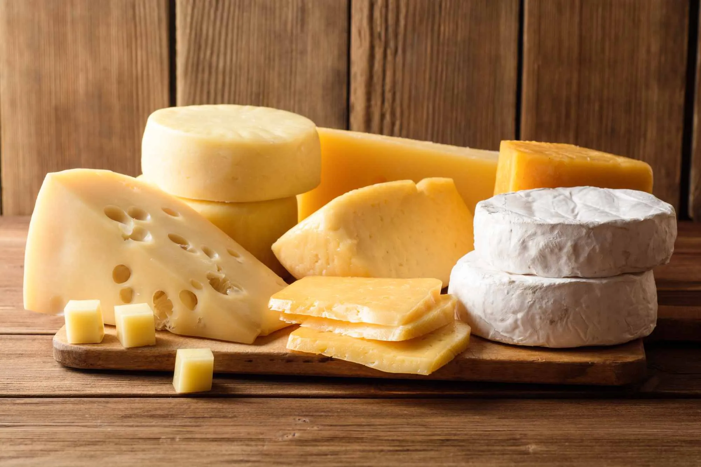 |
油菜花黄 | #fbda41 | R:251 G:218 B:65 | C:2 M:16 Y:84 K:0 |
油菜花黄，如同初春田野里盛开的油菜花，清新而灿烂，明亮的黄色在绿意盎然的田间如海浪般波动，散发着清新的气息与无尽的希望，仿佛是大自然送上的最纯粹的温暖与生机，勃勃生长，充满活力。 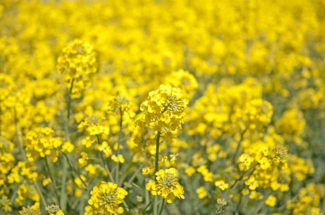 |
柠檬黄 | #fcd337 | R:252 G:211 B:55 | C:0 M:20 Y:87 K:0 |
柠檬黄，如同初夏阳光下的清新柠檬，明亮而充满活力，散发着一股清爽的酸甜气息，清新又不失活力，带来一阵清凉与愉悦。 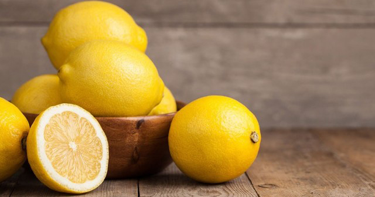 |
雅梨黄 | #fbc82f | R:251 G:200 B:47 | C:0 M:27 Y:88 K:0 |
雅梨黄，如同初秋时节成熟梨果的色泽，温润而柔和，散发着淡淡的甜香与清新，给人一种宁静、自然的舒适感，低调中透着优雅，恰如其分地展现着秋日的恬静与丰盈。 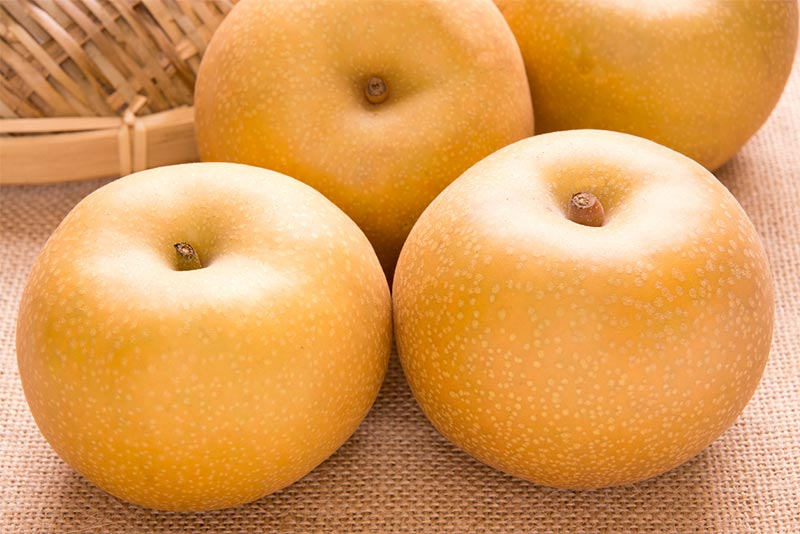 |
蛋壳黄 | #f8c387 | R:248 G:195 B:135 | C:0 M:32 Y:52 K:0 |
蛋壳黄，如同一枚新鲜鸡蛋的外壳，温暖而纯净散发出质朴而清新的气息，犹如大自然最简单、最真实的馈赠，温柔又恬静，带来一种朴实无华的宁静与安心。 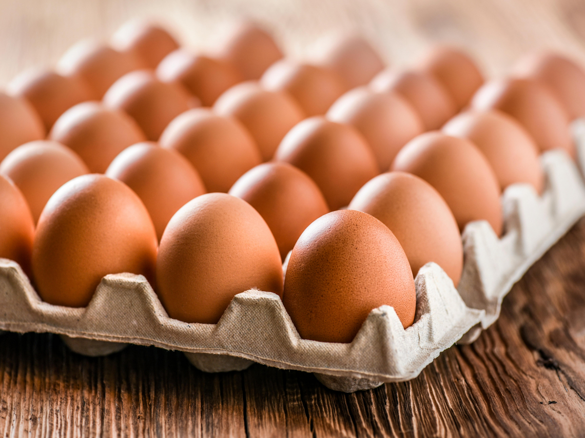 |
枇杷黄 | #fca106 | R:252 G:161 B:6 | C:0 M:47 Y:92 K:0 |
枇杷黄，如同初夏时节成熟枇杷果的色泽，带着一丝金黄的柔和与清新，仿佛是阳光洒在果园中的那一抹亮丽，散发着甜美与清新的香气，既温暖又清爽，充满了生机与希望。 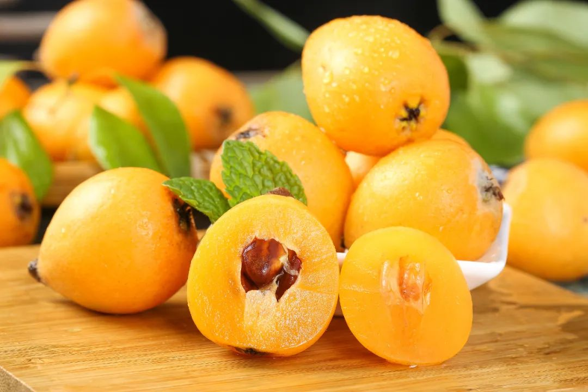 |
草黄 | #d2b42c | R:210 G:180 B:44 | C:17 M:27 Y:94 K:4 |
草黄，透着春天的气息，柔和而清新，仿佛是初春嫩绿的草地上微微泛黄的草尖，带着自然的生机与温暖，低调却充满了勃勃的生命力，带来一丝清爽与宁静。 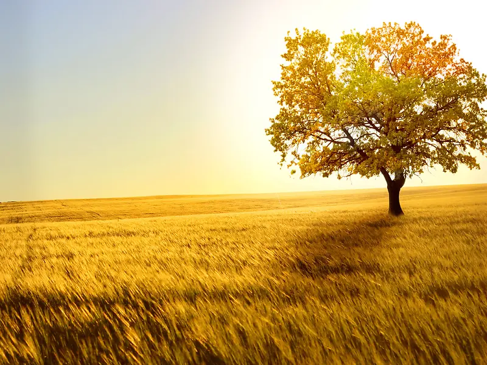 |
柘黄 | #c67915 | R:198 G:121 B:21 | C:20 M:60 Y:100 K:0 |
柘黄，凝聚着尊贵与庄严，深邃而华丽，宛如古代帝王龙袍上的黄锦，蕴含着皇家气派与历史的沉淀，温润的色泽中透着几分庄重与神秘，犹如古老王朝的辉煌，低调却无可忽视的威仪。 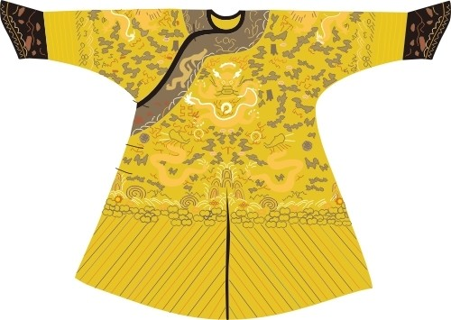 |
硫华黄 | #f2ce2b | R:242 G:206 B:43 | C:6 M:20 Y:92 K:1 |
硫华黄，鲜艳而明亮，仿佛盛开的硫华菊在阳光下闪耀的色彩，浓烈中透着一丝清新的活力，带着自然的生命力与热情，犹如大地上最炽热的色彩，给人一种温暖而充满希望的感觉，既鲜活又富有张力。 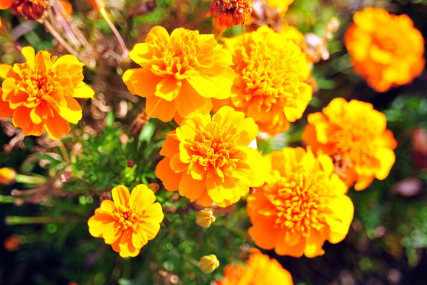 |
佛手黄 | #fed71a | R:254 G:215 B:26 | C:1 M:18 Y:94 K:0 |
佛手黄，温暖而清新，宛如佛手柑的果实在阳光下散发出的柔和色泽，带着一丝柑橘的清香与天然的气息，透出一种宁静与清雅，既不张扬却又自带一种温润的贵气，仿佛是大自然馈赠的珍贵色彩，清新中充满了舒适与平和。 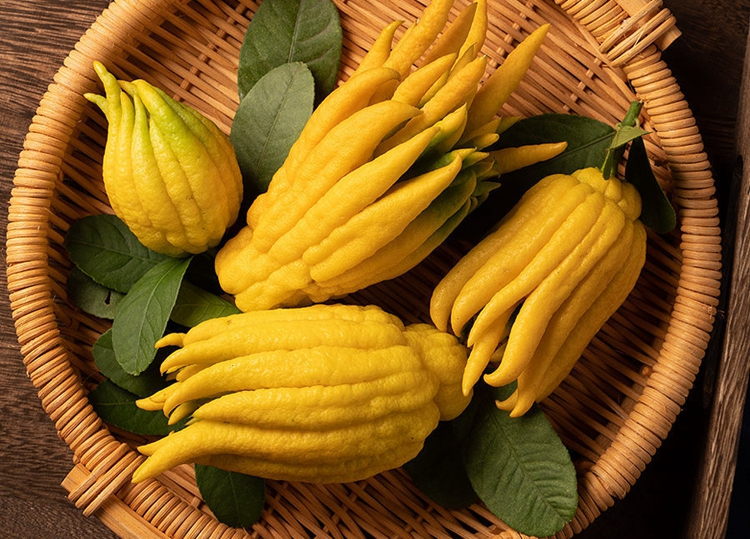 |
姜黄 | #e2c027 | R:226 G:192 B:39 | C:12 M:24 Y:95 K:2 |
姜黄，鲜艳而温暖，仿佛新鲜生姜切开时透露出的金黄色泽，带着一丝辛辣与自然的清香，既有大地的朴实气息，又散发出一种独特的活力与热烈，仿佛是一种原始的力量，充满了温暖与生气。 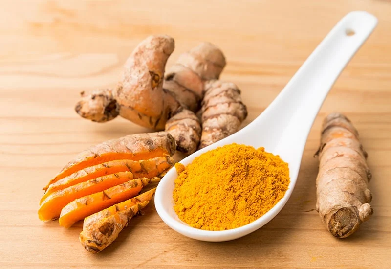 |
素馨黄 | #fccb16 | R:252 G:203 B:22 | C:0 M:24 Y:94 K:0 |
素馨黄，柔和而清新，仿佛黄素馨花在清晨的露珠中悄然绽放的色彩，带着一丝甜美的香气与清新的气息，温暖中透着一份恬静与优雅，既不张扬却自带一股淡雅的韵味，犹如温柔的春风，轻轻拂过心头。 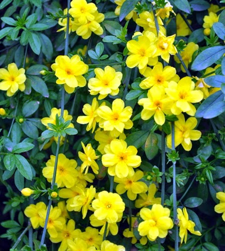 |
谷黄 | #e8b004 | R:232 G:176 B:4 | C:5 M:35 Y:99 K:0 |
谷黄，温润而沉静，仿佛秋收时节稻谷的金黄色泽，带着丰收的气息与自然的朴实，沉稳中透出一丝温暖与宁静，仿佛是大地在岁月流转中积淀的色彩，既富有生命力，又充满了丰盈与安定的气息。 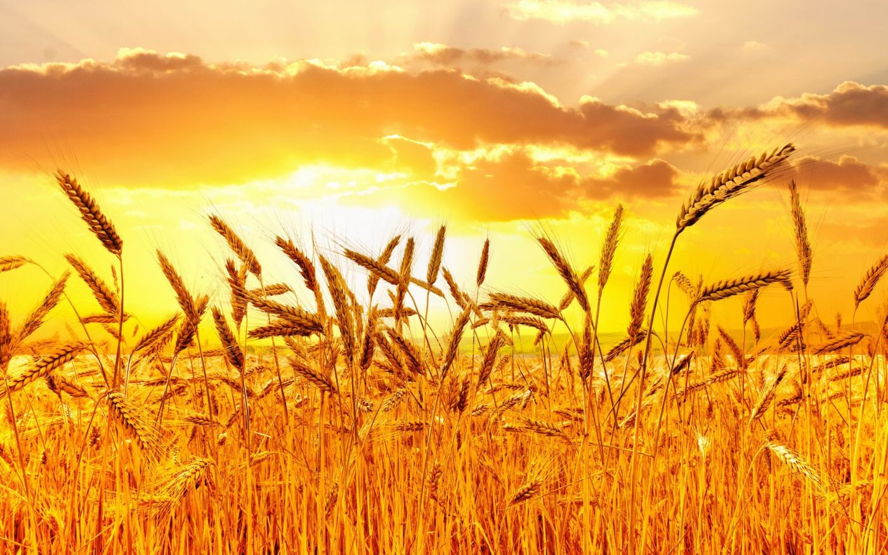 |
炒米黄 | #f4ce69 | R:244 G:206 B:105 | C:3 M:23 Y:69 K:0 |
炒米黄，温暖而柔和，仿佛刚刚炒熟的米粒散发出的淡淡金色，带着一丝香脆与自然的醇厚，低调中透着一份朴实的温馨，仿佛大地上的一抹柔和光辉，既充满生机，又富有生活的质感，带来一种舒适与平和的氛围。 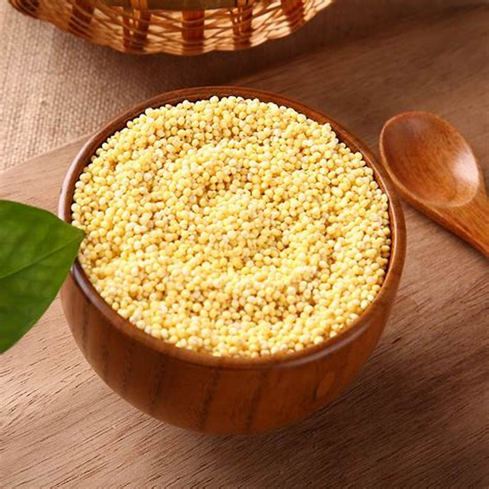 |
|---|